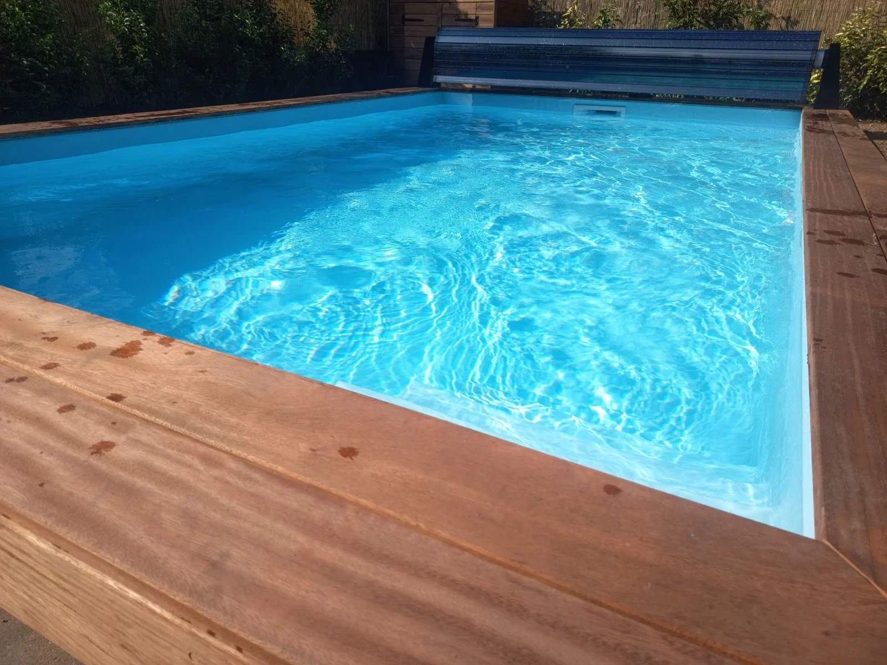
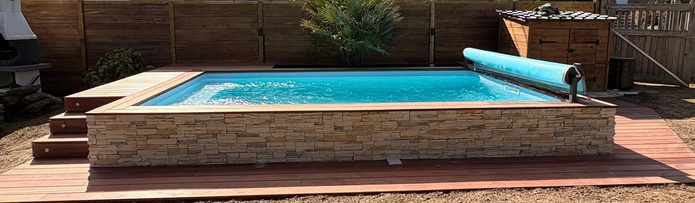

LC 6.3
6 × 3 m. Volet PVC manuel et pompe à chaleur inclus.
25 900 € TVAC
Découvrir LC 6.3
LC Création · Piscines & extérieurs
Votre piscine.
Tout un extérieur.
Une piscine bois premium 6 × 3 m.
Une équipe pour l’ensemble de votre projet.
25 900 € TVAC
Volet PVC manuel
Pompe à chaleur inclus
Prix en conditions standards. Terrasse et aménagements sur devis.
Garantie fabricant
structure bois Aqua Pins
Premier contrôle
Sérénité offert avec LC 6.3
De l’implantation aux finitions
un seul interlocuteur
Bien plus qu’un bassin
Nous nous occupons de l’ensemble.
Implantation, terrassement, piscine, terrasse, accès et plantations : chaque partie de votre extérieur est pensée avec les autres.
Découvrir nos aménagements
La collection LC Création
Une offre équipée, une ambiance paysagère ou un bassin sur mesure. Choisissez votre point de départ.
6 × 3 m. Volet PVC manuel et pompe à chaleur inclus.
25 900 € TVAC
Découvrir LC 6.3Une piscine et son ambiance végétale, étudiées ensemble.
À partir de 29 990 € TVAC
Explorer BaliVos dimensions, votre implantation et vos finitions.
Sur mesure
Imaginer mon bassin
L’extérieur se vit aussi le soir
Le bois, la pierre, la lumière.
Un lieu à vivre, jusque dans les détails.
Réalisation LC Création. Habillage, éclairage et aménagements selon le projet.

La signature LC Création
Un escalier intégré. Une margelle soignée. Des finitions pensées pour l’usage.
Nous étudions l’accès à l’eau, les équipements et le raccord avec la terrasse dans un même projet.
Tout ce qui compose LC 6.3Garanties & accompagnement
Savoir sur qui compter, après la première baignade.
Garantie du fabricant, selon ses conditions de pose et d’entretien. Les équipements ont leurs propres garanties.
Comprendre les garantiesVotre suivi annuel · En option
Contrôle planifié, réglages et conseils pour profiter de votre installation.
399 € / an
Inclus dans le pack Luxe selon l’offre retenue.
Ce contrôle est distinct du Pack Sérénité annuel optionnel.
Le savoir-faire, en images
La préparation, la construction et les finitions : découvrez les étapes de nos chantiers.
Voir les 7 étapes du chantierPhotographies de plusieurs interventions LC Création.
La confiance, chantier après chantier
Préparons votre extérieur pour 2027
Piscine, terrasse, jardin : parlons de l’ensemble de votre projet.